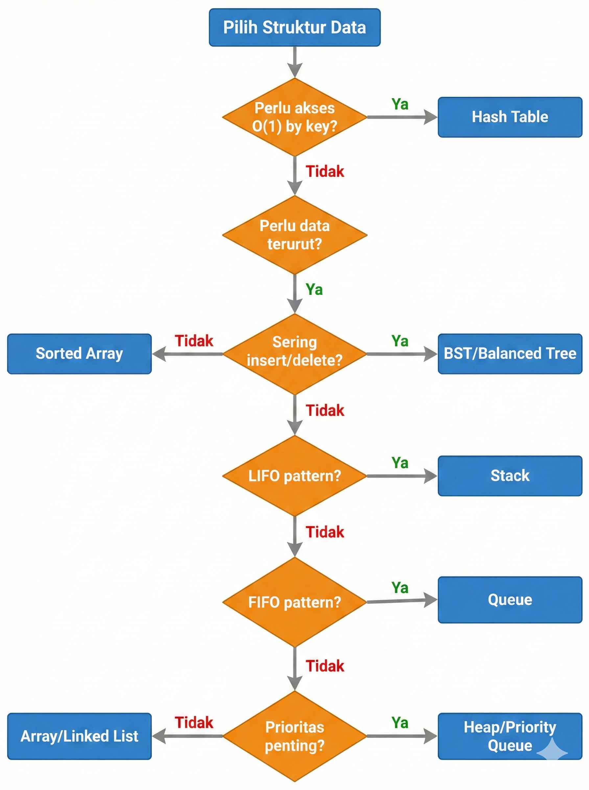
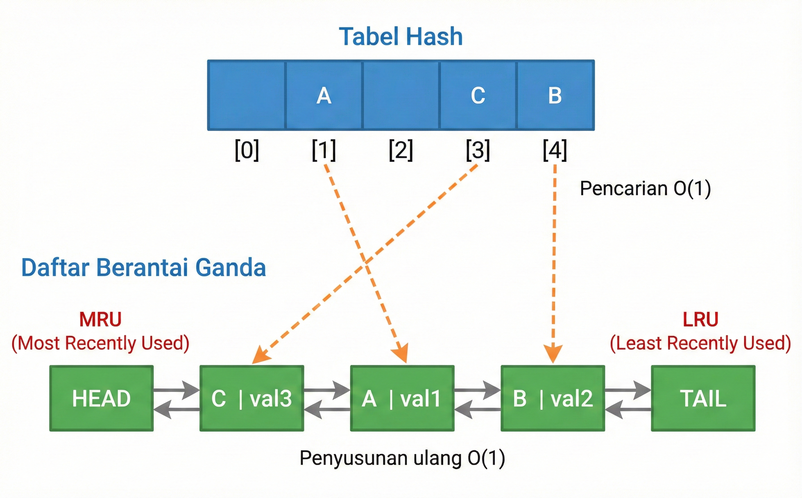
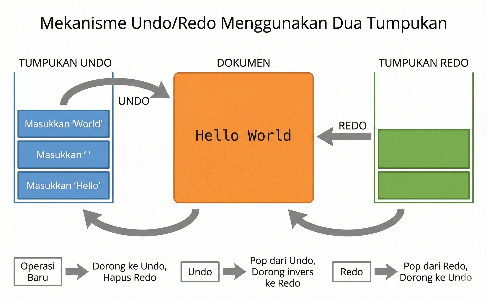
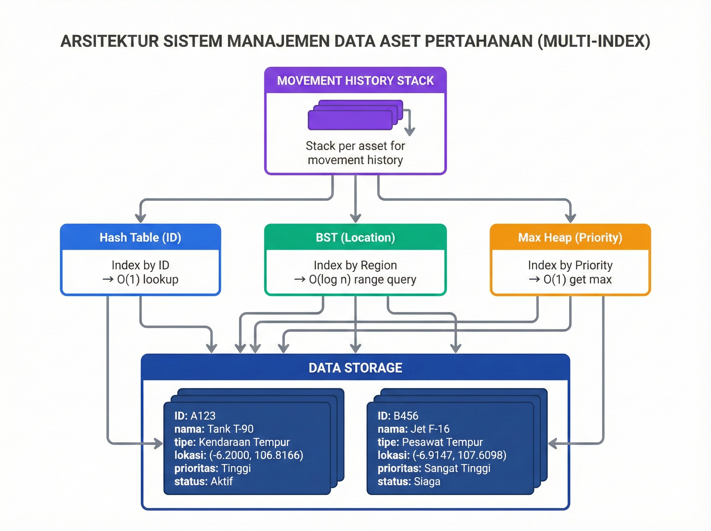

🎯 Tujuan Pembelajaran
Setelah pertemuan ini, mahasiswa mampu:
- Menganalisis trade-off dalam pemilihan struktur data
- Memilih struktur data yang tepat untuk permasalahan tertentu
- Mengintegrasikan berbagai struktur data untuk menyelesaikan masalah kompleks
- Mempersiapkan diri menghadapi UAS
📋 Agenda
Bagian 1
- Review Struktur Data Linear
- Review Struktur Data Non-Linear
- Review Algoritma Sorting
Bagian 2
- Perbandingan Kompleksitas
- Kriteria Pemilihan
- Studi Kasus Integrasi
- Persiapan UAS
🗺️ Peta Struktur Data

Gambar 15.1: Peta konsep seluruh struktur data yang dipelajari
📊 1. Review Struktur Data Linear
Struktur Data Linear: Elemen tersusun secara sekuensial, satu demi satu dalam urutan tertentu.
Empat struktur data linear utama:
Array → Linked List → Stack → Queue
📦 Array
✅ Kelebihan:
- Akses langsung O(1)
- Cache-friendly
- Memori kontinu
❌ Kelemahan:
- Ukuran tetap (statis)
- Insert/Delete O(n)
- Memori terbuang jika tidak penuh
Gunakan ketika: Ukuran diketahui, akses random sering
🔗 Linked List
✅ Kelebihan:
- Ukuran dinamis
- Insert/Delete di posisi diketahui O(1)
- Tidak perlu memori kontinu
❌ Kelemahan:
- Akses sekuensial O(n)
- Overhead pointer
- Tidak cache-friendly
Gunakan ketika: Insert/delete sering, ukuran berubah-ubah
📚 Stack (LIFO)
Operasi Utama: push(), pop(), top() — semua O(1)
Aplikasi:
- Function call stack
- Undo/Redo operation
- Expression evaluation
- Backtracking algorithms
🚶 Queue (FIFO)
Operasi Utama: enqueue(), dequeue(), front() — semua O(1)
Variasi:
- Circular Queue: Penggunaan memori efisien
- Deque: Insert/delete di kedua ujung
- Priority Queue: Berbasis heap
🌳 2. Review Struktur Data Non-Linear
Struktur Data Non-Linear: Elemen dapat memiliki banyak successor atau predecessor, membentuk struktur hierarkis atau jaringan.
Struktur non-linear utama:
Tree → BST → Heap → Hash Table
🌲 Binary Search Tree (BST)
| Operasi | Average | Worst |
|---|---|---|
| Search | O(log n) | O(n) |
| Insert | O(log n) | O(n) |
| Delete | O(log n) | O(n) |
⚠️ Worst case terjadi pada BST tidak seimbang (skewed tree)
⛰️ Heap
Min-Heap:
- Root = elemen terkecil
- Priority Queue ascending
Max-Heap:
- Root = elemen terbesar
- Priority Queue descending
| Operasi | Kompleksitas |
|---|---|
| getMin/getMax | O(1) |
| Insert | O(log n) |
| Extract | O(log n) |
| Build Heap | O(n) |
#️⃣ Hash Table
Operasi average case: Search, Insert, Delete — semua O(1)
Collision Handling:
- Separate Chaining: Linked list di setiap bucket
- Open Addressing: Linear/Quadratic probing, Double hashing
⚠️ Worst case O(n) jika banyak collision atau load factor tinggi
📊 3. Review Algoritma Sorting
| Algoritma | Best | Average | Worst | Space | Stable |
|---|---|---|---|---|---|
| Bubble Sort | O(n) | O(n²) | O(n²) | O(1) | ✅ |
| Selection Sort | O(n²) | O(n²) | O(n²) | O(1) | ❌ |
| Insertion Sort | O(n) | O(n²) | O(n²) | O(1) | ✅ |
| Merge Sort | O(n log n) | O(n log n) | O(n log n) | O(n) | ✅ |
| Quick Sort | O(n log n) | O(n log n) | O(n²) | O(log n) | ❌ |
| Heap Sort | O(n log n) | O(n log n) | O(n log n) | O(1) | ❌ |
🎯 Kapan Menggunakan Sorting Apa?
- Data kecil (n < 50): Insertion Sort — simple, low overhead
- Data hampir terurut: Insertion Sort — O(n) best case
- Perlu stable sort: Merge Sort
- Perlu in-place: Quick Sort atau Heap Sort
- Worst case guarantee: Merge Sort atau Heap Sort
- Memory terbatas: Heap Sort — O(1) space
📊 4. Perbandingan Kompleksitas

Gambar 15.2: Perbandingan Array vs Linked List
Tabel Kompleksitas Operasi
| Struktur | Access | Search | Insert | Delete | Space |
|---|---|---|---|---|---|
| Array | O(1) | O(n) | O(n) | O(n) | O(n) |
| Linked List | O(n) | O(n) | O(1)* | O(1)* | O(n) |
| Stack/Queue | - | - | O(1) | O(1) | O(n) |
| BST (avg) | - | O(log n) | O(log n) | O(log n) | O(n) |
| Heap | O(1)** | O(n) | O(log n) | O(log n) | O(n) |
| Hash Table | - | O(1) | O(1) | O(1) | O(n) |
*di posisi diketahui | **hanya min/max
🎯 5. Kriteria Pemilihan Struktur Data

Gambar 15.3: Flowchart pemilihan struktur data
Pertanyaan Kunci
- Operasi apa yang paling sering?
- Akses random → Array
- Insert/Delete → Linked List
- Min/Max → Heap
- Apakah ukuran data diketahui?
- Diketahui → Array
- Dinamis → Linked List / Dynamic Array
- Apakah data perlu terurut?
- Ya → BST / Sorted Array
- Tidak → Hash Table
🧠 Quiz: Pilih Struktur Data
Sistem perlu menyimpan data dengan operasi:
- Pencarian berdasarkan key → sangat sering
- Insert/Delete → sering
- Akses berurutan → jarang
Struktur data apa yang paling tepat?
Jawaban: Hash Table
Search O(1), Insert O(1), Delete O(1) — optimal untuk operasi berbasis key!
🧠 Quiz: Trade-off Analysis
Mengapa array sorted + binary search tidak selalu lebih baik dari BST?
Jawaban:
- Insert pada sorted array: O(n) karena perlu geser elemen
- Insert pada BST: O(log n) average
- Jika data sering berubah → BST lebih efisien
- Jika data statis → Sorted array + binary search lebih cache-friendly
🔧 6. Studi Kasus Integrasi
Contoh nyata penggunaan kombinasi struktur data:
- LRU Cache — Hash Table + Doubly Linked List
- Text Editor Undo/Redo — Two Stacks
- Sistem Aset Pertahanan — Multi-Index Pattern
📦 LRU Cache

Gambar 15.4: Arsitektur LRU Cache
Kombinasi: Hash Table (O(1) lookup) + Doubly Linked List (O(1) removal & insertion)
💻 LRU Cache: Operasi
| Operasi | Langkah | Kompleksitas |
|---|---|---|
| get(key) | 1. Cari di hash table 2. Pindahkan node ke head |
O(1) |
| put(key, val) | 1. Insert ke hash table 2. Insert node di head 3. Evict tail jika penuh |
O(1) |
📝 Text Editor: Undo/Redo

Gambar 15.5: Mekanisme undo/redo dengan dua stack
📝 Text Editor: Operasi
void execute(Operation op) {
op.apply(document);
undoStack.push(op);
redoStack.clear(); // Invalidate redo history
}
void undo() {
if (!undoStack.empty()) {
Operation op = undoStack.pop();
op.inverse().apply(document);
redoStack.push(op);
}
}
void redo() {
if (!redoStack.empty()) {
Operation op = redoStack.pop();
op.apply(document);
undoStack.push(op);
}
}
🎖️ Sistem Aset Pertahanan

Gambar 15.6: Arsitektur multi-index untuk aset pertahanan
🎖️ Multi-Index Pattern
| Query | Struktur Data | Kompleksitas |
|---|---|---|
| Cari berdasarkan ID | Hash Table | O(1) |
| Cari berdasarkan region | BST (by region code) | O(log n + k) |
| Ambil prioritas tertinggi | Max-Heap | O(log n) |
| History perubahan | Stack | O(1) |
📚 7. Persiapan UAS
Cakupan UAS: Seluruh materi Pertemuan 1-15, dengan penekanan pada Pertemuan 9-15
📋 Topik Penting untuk UAS
| Prioritas | Topik | Jenis Soal |
|---|---|---|
| ⭐⭐⭐ | Sorting (Merge, Quick, Heap) | Tracing, implementasi, analisis |
| ⭐⭐⭐ | Tree & BST operations | Traversal, insert, delete |
| ⭐⭐⭐ | Hash Table | Collision handling, lookup |
| ⭐⭐ | Heap & Priority Queue | Build heap, extract |
| ⭐⭐ | Pemilihan struktur data | Analisis trade-off |
| ⭐ | Stack, Queue, Linked List | Operasi dasar, aplikasi |
📝 Jenis Soal yang Sering Muncul
- Tracing: Ikuti eksekusi algoritma langkah demi langkah
- Implementasi: Tulis kode untuk operasi tertentu
- Analisis kompleksitas: Tentukan Big-O
- Perbandingan: Bandingkan struktur data untuk skenario tertentu
- Desain: Pilih dan integrasikan struktur data
🧠 Quiz Persiapan UAS
Diberikan array: [3, 1, 4, 1, 5, 9, 2, 6]
Setelah 3 iterasi Selection Sort, bagaimana kondisi array?
Jawaban:
- Iterasi 1: [1, 3, 4, 1, 5, 9, 2, 6]
- Iterasi 2: [1, 1, 4, 3, 5, 9, 2, 6]
- Iterasi 3: [1, 1, 2, 3, 5, 9, 4, 6]
💡 Tips Sukses UAS
- Pahami kapan menggunakan struktur data mana
- Hafal kompleksitas operasi dasar setiap struktur
- Latihan tracing algoritma di kertas
- Kerjakan solved problems di modul
- Fokus pada Pertemuan 9-15
📝 Ringkasan
| Struktur Data | Best For | Key Operation |
|---|---|---|
| Array | Random access, data statis | Access O(1) |
| Linked List | Insert/delete sering | Insert/Delete O(1)* |
| Stack | LIFO, backtracking | Push/Pop O(1) |
| Queue | FIFO, scheduling | Enqueue/Dequeue O(1) |
| BST | Data terurut, range query | All O(log n) avg |
| Heap | Priority queue, top-k | Extract O(log n) |
| Hash Table | Key-value lookup | All O(1) avg |
❓ Pertanyaan?
Silakan bertanya atau diskusi
Referensi: Cormen (seluruh bab) | Weiss (seluruh bab)
Terima Kasih! 🙏
Struktur Data dan Algoritma
Pertemuan 15
Selamat belajar untuk UAS!
© 2026 - CC BY 4.0